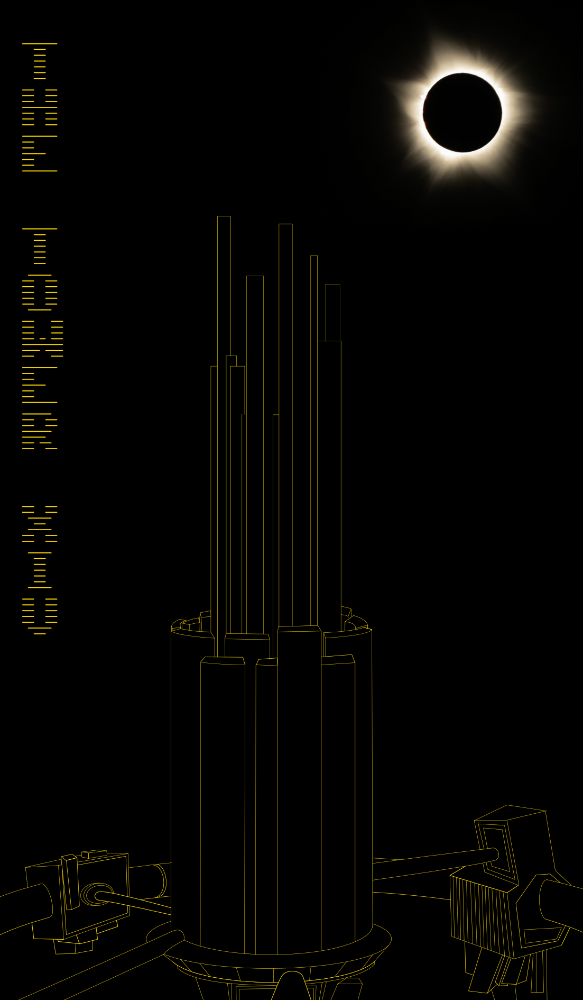
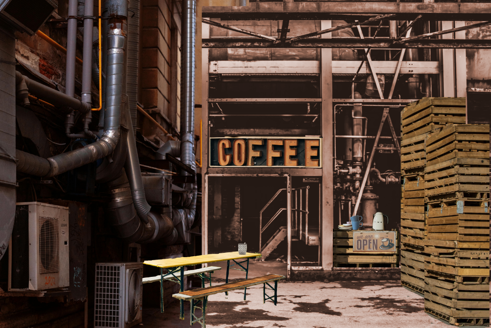
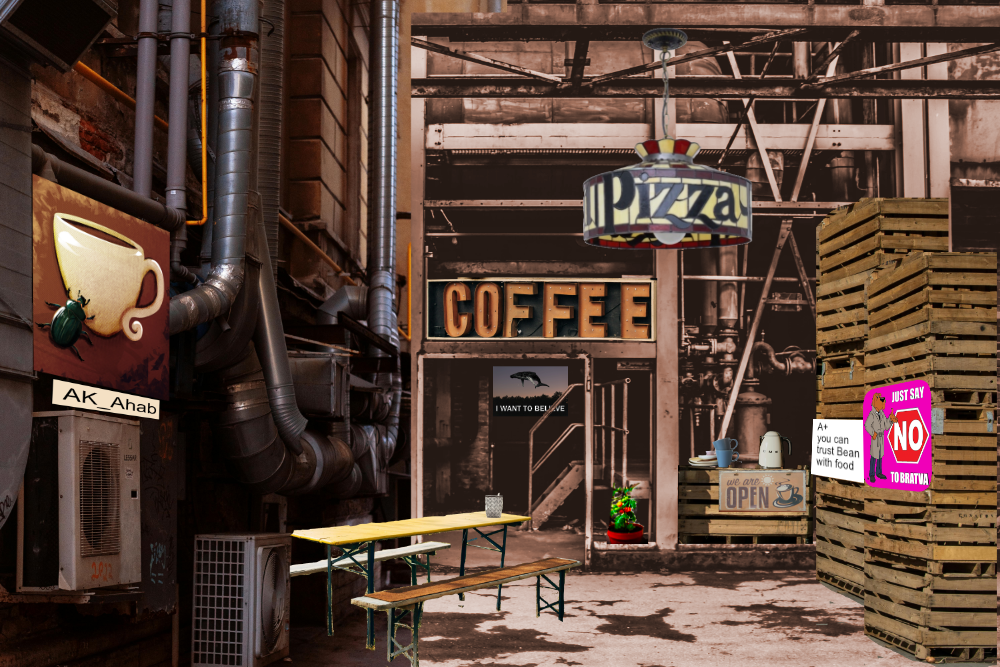
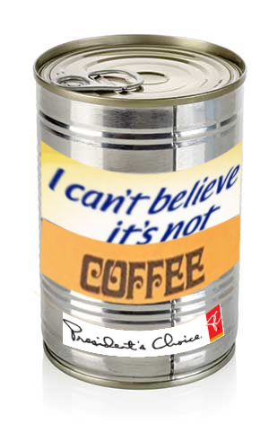
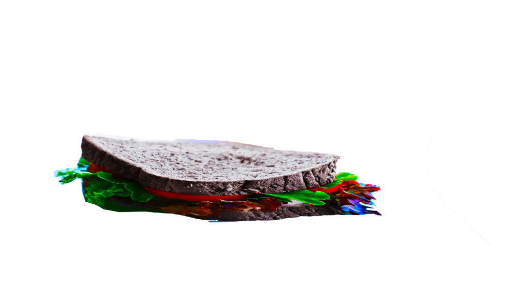
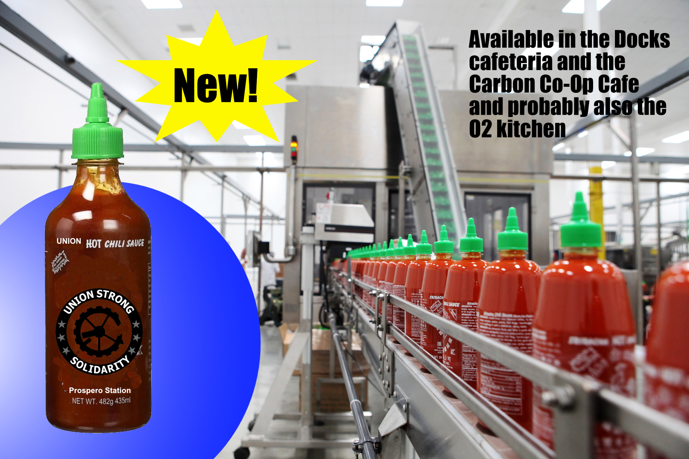
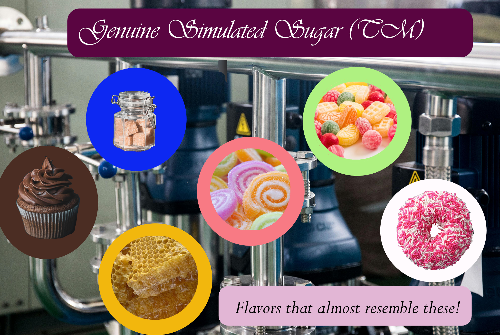
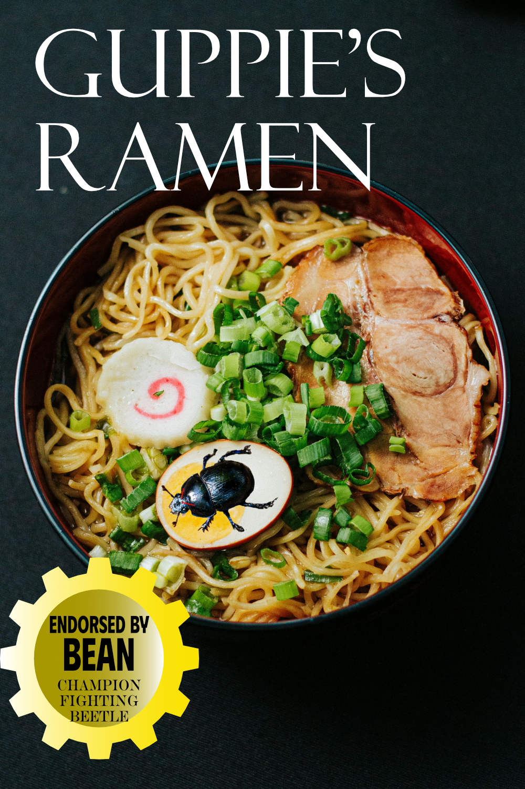
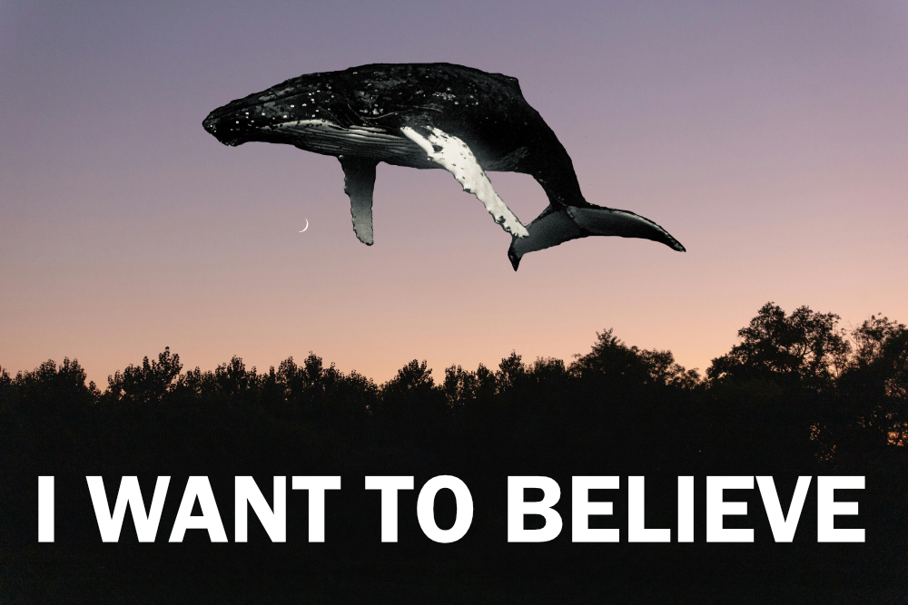

Art I did for Over/Under
Over/Under was a very large game that's kind of complicated to explain that I played in October and November of 2025, with about 1000 people, on discord. It was basically a sort of a megagagame. I made a bunch of art for it, art being defined broadly.
I'll start with my one high effort drawing, for the Solarian Church's tarot deck. It's Prospero's Dream station's The Choke, where people are sent when they can't afford to pay the O2 tax. Just depicted from a slightly different angle than usual - in space, there is no up or down. Also, an eclipse is like space weather.
The Carbon Co-Op Cafe
One of the first things I did in Over/Under is I set up a thread where the premise was that it was a quiet coffee shop, somewhere to get away from the very busy #union-hall thread. I labeled it "chat/rp" because I somehow imagined people would not RP otherwise. I was extremely wrong on that.
The premise was that it was a non-profit co-op set up in a corner of an abandoned factory somewhere, something somewhat unauthorized. I made a collage of art from pexels.
I added to it over the course of the game and eventually ended up with it looking like this:
I commissioned art from AK_Ahab of my champion fighting beetle Bean; another player added a tomato plant from Grash's gardening club; I have no context for the pizza lamp except that someone brought it to the cafe; the "I want to believe" poster with the whale is from a space whale cult; "just say No to Bratva" was in response to someone saying that someone from Bratva had tried to recruit them like they were trying to sell something in a shady alleyway; Bean eventually got his food handling certificate and took over primary responsibility for the coffee shop.
I also made a whole bunch of low effort photoshops of food as a result. First I made a picture of a can of "coffee" which the cafe served:

Updated when I became president:
I photoshopped some food to look less appetizing as well, including some sandwiches that got squished:
Puzzles
Technically also a part of the cafe, I made a series of puzzles which tell a story as they are solved. A mysterious machine was found in the cafeteria and I needed volunteers to reassemble it. Here was the first one, also made from a free image on pexels:

Followed by this one:

I then got people to pick a flavour based on the icon to "unlock" next. We never did get them all because I got very busy towards the end of the game. I started to learn by watching people solve the puzzles what makes a good puzzle and what doesn't; knowledge I will probably never have reason to use again.
 
I started another puzzle-based storyline in the blocks but I didn't have time to finish it. It would have related to the Evil Plant (see below) and a little storyline about Bean. Also I got a lot less interest here than in the union so I was less motivated to do this.

Other
After Bean won the first beetle fight tournament, I made a poster endorsing Guppie's Ramen. I don't remember why.
I made an "I Voted" sticker for all the Union's many votes.

The following two have been explained previously.

The Ominous Plant
I wrote a blog post that gives an idea of what it was like being a boss. I also wrote about engaging with the political side of the game both as a denizen and as a boss. This part is more representative of my time as a denizen when I was actively not doing politics. I didn't do a ton of what I've heard called live text roleplaying because my schedule did not line up that cleanly with everyone else's. A lot of what I did instead was more like solo journaling with an audience, using other people's posts asynchronously as prompts.
Oct. 20
Alcyone: Hey Grash , do you have any mystery seeds? I'll plant one and try and grow it. Bring it back to show everyone
Grash: Yes! Many!
Alcyone: grabs a particularly mysterious seed
A few days later...
Oct. 20
Alcyone: My strange seed sprouted. Right now it looks pretty normal, but lots of room to grow....

Oct. 21
Alcyone: wow, it's growing fast! Three leaves and a... purple tendril?
Abigail L'mantra: the purple tendril is normal. if it starts to become a light blue, let us know immediately.
Oct. 23
Alcyone: someone said light blue was bad but that's just a bit of light blue right
Grash: Um Yes Just a little bit! If it grows longer though Come here IMMEDIATELY.
Oct. 27
Alcyone: Ok I did forget about the plant for a bit but it's still growing and I wanted to give you an update before you leave
Grash:It’s beautiful!!!! And not at all too blue!! Thank u for tending to it!! Would u want to take over the Grash upper gardening club? U have a great touch for plants!
Alcyone: I could try! I'll definitely keep up with the plant

Oct. 28
Alcyone: The plant continues growing

Oct. 31
Obshchak Sylvana: ((re-opening this thread)) Sylvana sits at a small table in the garden, surrounded by flowers. She pours tea. There are four chairs and four cups. She waits for her guests.
Adjudicator Jess Levine The Adjudicator arrives, as composed as you have ever seen her. [...]
Suluweti Cabral Cabral arrives. Unadorned. Tempest fatigues. [...]
XO: Tan Tan arrives; her eyes blackened. [...]
[...a bunch of stuff happens that changes the course of history...]
Grash A plant sitting close suddenly blooms. A flower extends itself in the direction of Cabral.
[...more stuff happens...]
Alcyone: Alcyone has been impatiently hanging around holding a plant for almost an hour, trying to keep an eye on who is in in the gardening club, ducking down whenever anyone inside seems like they might look her way. When they finally leave and turn the corner she hurries over as though afraid they will come back any moment, looking around nervously for those lurking in the shadows. Only then does she realize that it's empty of all actual gardening club members, all of them probably equally afraid of running into the Bratva bosses. Still, she has an odd sense that ghosts are haunting the place. Wow, I finally remember to bring in my plant and show everyone how much it's grown, and the place is totally empty. This place really isn't the same without Grash.
Nov. 1
Alcyone: The ominous plant continues to grow
Fenn Echalbi: Fenn meanders through the garden, deep in thought. The artificial light filters through the rustling leaves. It almost feels like being planetside. Almost. His reverie is broken by an interesting looking plant. Startling, even. He sits down and ponders it. In the back of his mind he is mulling over the consequential events from the past days, and thinking of those in the days to come.
Alcyone: At first glance, the plant seems like it might simply be several plants grafted together, each plant from a different species. But as you look more closely you see that even down to the leaf every part is different, each leaf has a wildly different pattern of veins, and there is something slightly off about each one, as though created by someone who had heard a second-hand explanation of what a leaf looks like.

Nov. 2
Alcyone: A flower starts to open. It's somehow in the air above the plant?
Nov. 3
Incendiary Crocs: Wanders into the garden, stopping in his tracks. Falx squints at the plant, mouthing 'what the fuck?!' He takes a picture on his holopad and forwards it directly to @Fenn Echalbi, captioned "have you been pouring those new energy drinks on the plants??"
Fenn Echalbi: 🛜 Although it may indeed be what plants crave, no, I think this plant is juiced enough already. If I were you, I'd get the hell out of there. Who knows when it's going to start craving something with more... protein?
Incendiary Crocs: tap tap tap tap tap tap... 🛜 probably grash trying to get us from the grave. i never paid him back for all the golden pins 📀I broke on the job Falx promptly leaves.
Cannellini: Cannellini spends the early morning tending to her bean plot, tucked away in a small corner of the gardens. On her way out, she notices Alcyone's plant. Huh. I guess that's, um, probably fine?

Nov. 4
Alcyone: The flower, if you can call it that, seems more like a rift in reality

Nov. 5
Abigail L'mantra: Dear god... Well that's probably normal;
Nov. 6
Alcyone: Alcyone takes the plant away before the funeral. Puts it in a box and wheels it away on a cart. It'll be back though.
A funeral for Cabral occurs

Nov. 10
Alcyone: ((ended up being a bit rushed, was going to do another drawing)) The rift fully opens and a hole in reality appears in the middle. But not a big one. Not one that endangers the station, or any people nearby. It's about the size of, perhaps, a beetle? Bean the beetle appears with a tiny little briefcase in his hand and a tiny thermos full of coffee. He pulls a tiny collapsible ladder out and unfolds it. He leaves a tiny note:
Hey so the stange machine by the docks was also mine. It's not dangerous, I had some plans but ran out of time to finish them. I had an amazing time on the station. Thanks to @Miss Monet Grey for teaching me to read and helping me get my food safety certification, I never thought I'd end up running a coffee shop. Never thought I'd be a champion beetle fighter either or get to endorse a ramen shop. Hopefully I'll be back someday, but now seems like a great time to get off the station. You can keep the plant around if you want, it's not dangerous either.
He then climbs upu the latter, into the rift in reality, and then is gone. The rift closes behind him.